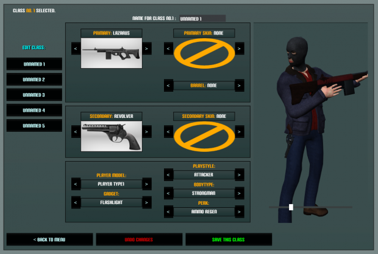

PlanB - FPS Game
PlanB is an easy to pick up FPS gameperfect for LAN parties and casual players.
PlanB - Making of an Indie FPS

Hello there and welcome to the first real blog post on this very site.
Today I would like to talk about the making of the first game I developed.
Well the first game is not entirely true, I have written very very simple games
before I had started working on PlanB.
So I did have some very limited programming experience prior to PlanB.
Motivation
So what motivated me get into game development in the first place was that I loved shooter games.
At the time I had two favourite games which where “Call of Duty: Black Ops” and “Cube 2: Sauerbraten”.
I have always wondered how I could create my own maps and weapons for these games.
More Story Time
I knew Sauerbraten is an open source game and even managed to compile it myself
after a lot of fiddling around with CMake.
However, I really wasn’t ready to understand its source code.
I only had very limited programming experience in AutoIt and BASIC.
So I gave up on C++ and trying to understand the source then.
After a while I discovered some other guys on YouTube using
the Unity3D game engine to program their games in.
One of the first guys where:
-
OneManArmy3d:
who at the time was working on an FPS kit at the time and used COD models for preview in his videos
-
DrunkenLizardGames:
was working on an FPS that had a really cool animation system and parkour elements
-
TheLegoBobafet:
was working on an untitled FPS at the time. It is now released and titled Red Army
These inspired me to pick up the Unity3d game engine also,
which was in version 3.something the first time I picked it up.
For quite a while all I did in Unity was to play around with the bootcamp and the island FPS demo.
But after a while I joined OneManArmy’s forum called armedunity.com
and used his FPS kit to learn from it and play around with it.
There where some really cool guys on youtube doing coding tutorials to teach a noob like me.
Most notable where:
-
NarutoIsGreat12345: Is now known as HyperShadeTutorials on youtube. Old content is lost :/
-
Eetski Tutorials: Now know as MasterIndie on youtube
But the most I have had learned from the ArmedUnity community.
(btw. it is meant to be understood as: “armed with unity”)
There where great people in the communty, too many to mention all of them here.
However, a guy named OcularCash helped me a couple of times directly.
Also I would like to mention theMars2011 here,
who joined the forum a little bit later than me
but is now working on a really impressive title with a small team of developers:
Development of PlanB
So after I figured that I have done enough ground work and know how a FPS works in theory
I wanted to finally build my own fps pretty much from scratch.
Most of the structure where inspired by OMA’s FPS Kit and Guides by other people in the community.
However, in the beginning I wanted to everything on my own (and i mostly did).
So without much planing of what the goal of the game should be I started to code the character controller,
weapon scripts etc., started modeling and animating the weapons.
This was from what I remember done in a single week and out came this video:
Then I wanted PlanB to become a story based multiplayer FPS game.
I wanted it to be a SciFi-WW2 shooter first and also already modeled weapons for that.

However, you can already guess that this is a very strange idea.
Realizing that and that it doesn’t make any sense I scrapped the whole story and models.
Instead I decided to go for a full/simple multiplayer game in a fictional setting.

So I ended up scrapping all of the previous player and weapon models and decided to design weapons
by myself.
Here you can see a Picture of the Designs that I came up with:

After designing the weapons, modeling them, texturing and recording sounds for them
I ended up with a set of 10 weapons that I would keep.
(About 5 weapon designs got scrapped.)
Video of all weapons in the engine:
I wanted to focus on the gameplay for now and to test things out
I implemented a simple zombie AI that would chase and attack the player.
Also I wanted to be able to save settings, progress and other things in an easy manner.
I figured that the tooling that was already there was insufficient for me and thus I created my own
simple key-value database solution along with some editor scrips to go along with it:
Around this time I also added a class editor into the game that would let you create
“classes”, which are just a selection of preferred weapons, skins and perks:

So after trying to polish most of the basic functionality I make this video:
I thought I would like to have a Fallout like wasteland as a map
and figured that I could probably save a lot of time with level design
by just having everything procedurally generated.
That means:
- automatically generating textures/terrain materials
- automatically generating terrain height maps
- automatically apply vegetation and textures to the map
- automatically build a border around the terrain and place prefabs like buildings
So i first needed to write a tool to help me create seamless pbr materials.
I ended up writing a simple java tool that uses some tricks but ends up with pretty nice results:
Video Demo:
So I made a trip to the woods and took photos of textures with my camera.
Also I started to write some basic terrain generation script that generates a height map
for the terrain to use by layering perlin noise with a different frequency and amplitude on top of each other.
I also wanted to have a bigger terrain than what Unity supports by default. But there was an easy fix,
I just stitched multiple terrains together. Using the size of the terrain so far an offset for the perlin
noise function makes the terrains stitch together perfectly.
After I had all that working I realized that this is not enough.
The tiling in the terrain was too obvious, so I decided to write a custom terrain shader also,
that would have harder blending between the textures and uses many cheap tricks to hide the tiling.
Like overlaying a perlin noise texture to control the hue
and blending with a bigger version of the same terrain texture based on the distance to the camera.
That means if you are close to the texture it will display the scaled down version of the texture for detail,
but if you are further away from the texture the opacity of the scaled up version increases
to hide the seams and patterns of the detailed version of the texture.
Now I only had to make a slight adjustment to correct the normals of the vertices of at the edges of
the terrains that I have stitched together.
Because there where no vertices to figure out the correct normal orientation these vertices created a seam
where the terrains got stitched together.
So that was working well:
You can also get this tool for free here:
However, after a while I figured that I can surely generate huge maps with this tool,
but the resulting map is boring to play on.
Hence I decided to build out a map manually and with the help of the asset store and a friend
I ended up with this map:
Which also is the currently used map.
Only some tweaks where left to do like enabling server configuration through a .conf file.
And also removing claymore mines from the game.
these things where buggy and useless in multiplayer, so I decided to just remove them.
LAN Gameplay:
So at the end this turned out to be really fun game for LAN parties
and is available for Windows, Mac and Linux here:
I have also set up a simple official server, but it is a single core VPS
so the performance of the “official server” is lacking a lot.
However, it is really easy to host your own as described on the download page.
I hope you can enjoy the game with some friends!
What I learned:
Even though this game didn’t tun out as the next COD,
as I have wanted when I started as a teen, this game turned into
a fun shooter to play at LAN parties.
Also the real value this project gave me lies
in the things I have learned along the way.
This includes but is not limited to:
- How to program in general
- Using modeling software like blender
- How game engines work
- introduction to shader programming
You can download it for free here: